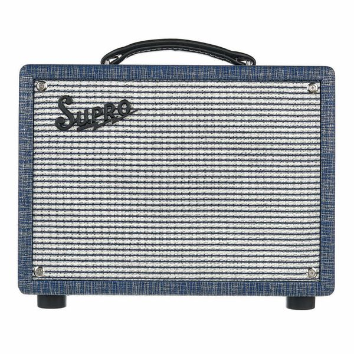

A guitar amplifier (or amp) is an electronic device or system that strengthens the electrical signal from a pickup on an electric guitar, bass guitar, or acoustic guitar so that it can produce sound through one or more loudspeakers, which are typically housed in a wooden cabinet.
